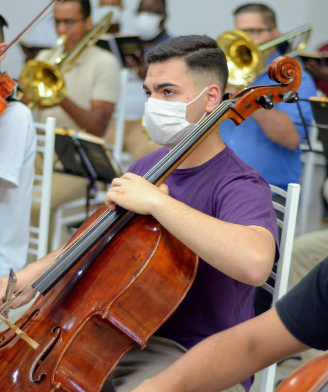
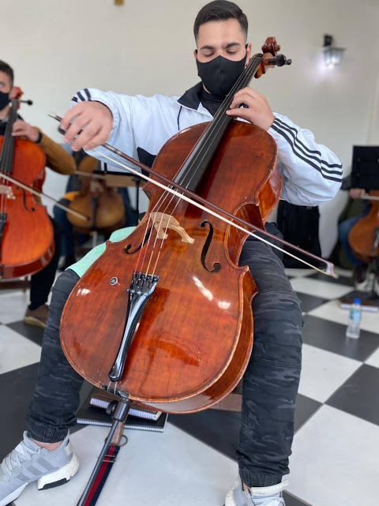

Biografia
Luís Henrique
Olá, meu nome é Luis Henrique, tenho 18 anos e nasci na cidade de Ribeirão Pires no dia 16/03/2006. Sou estudante de Ciência da Computação na São Paulo Tech School - SPTech, sou judoca desde os 4 anos, e o que levou os meus pais me colocarem para praticar o judô além da dispciplina e respeito que se aprende lá, foi o hipotireodismo que é uma deficiência na produção de hormônios em nossos corpos. No início, eu ia para os treinos obrigado porque era para a minha própria saúde, mas em pouco tempo, comecei a tomar gosto pelos treinos e fui convidado a participar de algumas competições pequenas na minha cidade. O tempo foi passando e fui participando de muitas competições, comecei a representar a cidade onde resido (Mauá) em outras cidades, outros estados em campeonatos estaduais, paulistas e quando finalmente cheguei no meu ápice, representei o Brasil duas vezes no exterior (Canadá), foi um marco muito importante na minha vida.
Outra atividade que teve um impacto na minha vida foi a música, porque meus pais e grande parte da minha família são músicos também, e isso foi um papel fundamental para mim, no aprendizado, na educação e também no foco. Então um pedaço da minha história que eu gostaria de compartilhar com todos, é sobre a música.
Trajetória Musical

Iniciei os meus estudos na igreja aos 9 anos, e lá começamos pela parte da teoria musical e depois de um certo ponto, pegamos o instrumento que nós desejamos aprender. O meu desejo era tocar Violoncelo, e quando chegou na época de comprar o instrumento, meus pais compraram o Violoncelo e já procuraram um conservatório para eu poder iniciar de forma mais técnica, então me matricularam em um conservatório Musical em Santo André, 6 meses depois eu ingressei na orquestra da igreja... Pouco tempo depois, meu professor veio a faleceu e eu fui estudar com um professor particular chamado Ivan Oliveira, que tinha formação na academia da Orquestra Sinfônica do Estado de São Paulo (OSESP) e estudei com ele durante mais ou menos 1 ano e 6 meses, onde desenvolvi muito minha técnica. Na época, eu tinha por volta de 12 para 13 anos e meu pai veio a ficar desempregado, e tive que parar os estudos, pois não tínhamos condições de ficar pagando as aulas mensais. Fiquei em casa estudando por conta própria, e foi nesse período que a música se tornou algo muito importante para mim.
Sonhos e Conquistas
 Quando somos pequenos, temos diversos tipos de sonho, não é mesmo?! E o meu grande sonho era poder tocar em uma orquestra onde tivesse músicos profissionais e gravação. Depois de bastabte esforço, esse sonho deixou de ser algo inalcançável e em dezembro de 2020 foi a primeira experiência com uma orquestra de alto nível